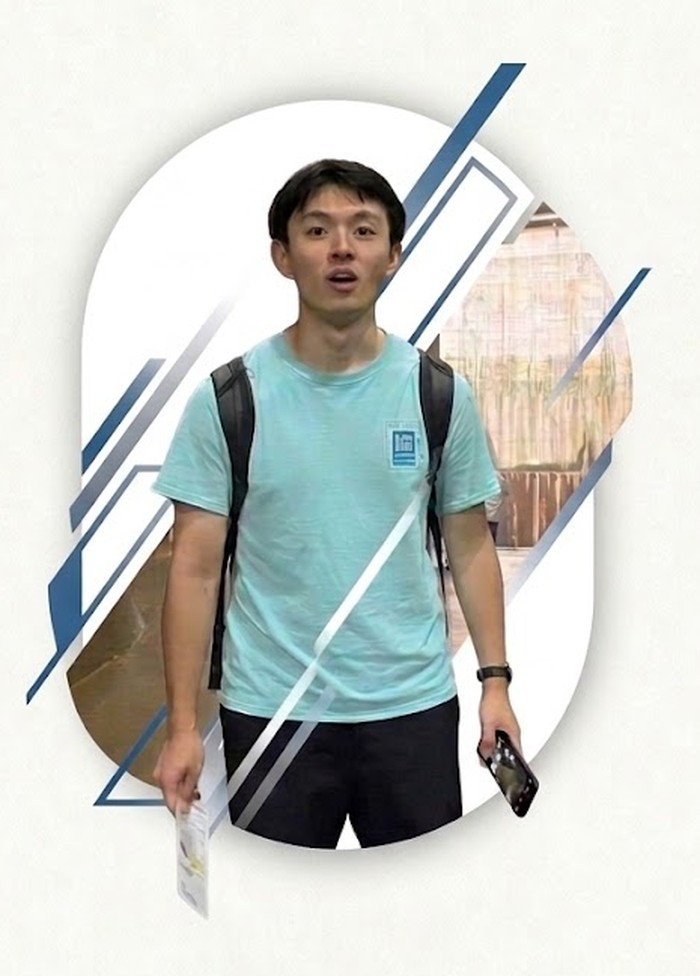

学生が最も知りたい「日常・サポート・成長」をまとめました。

ドイツ・ハンブルク工科大学(TUHH)で開催された世界5大学合同セミナーに、M1のメンバーが参加しました。各国から集まった学生たちと熱工学や人間空間デザインについて議論を交わし、文化や研究スタイルの違いに触れながら多くの刺激を受けました。帰国後は、ここで得た視点や人脈を自身の研究にも生かしています。

軽井沢セミナーハウスにて研究室合宿を実施しました。M2による中間発表、B4による卒業論文概要発表を行い、互いの研究テーマについて活発に議論を交わしました。夜にはBBQを囲んで親睦を深めるなど、研究とリフレッシュを両立した3日間となりました。
当研究室の研究は、学部で学んだ知識の延長線上にあります。特に講義「工学系の解析設計演習」で学ぶアナロジー（類推）や理論をベースとした設計手法は、複雑な人間空間をシステムとしてデザインするための強力な武器になります。座学で学んだ数式や理論が、現実世界の空間をどう変えるのか。研究室での実践を通じて、知識を「社会で使える生きた知恵」へと昇華させます。
総額6億円規模のサイバーフィジカル設備群を学生自身が操作し、自らのアイデアを「実空間」で即座に検証。シミュレーションと実証実験を行き来する実践的なスキルが身につきます。
世界中から優秀な留学生や研究者が集まり、日常的なディスカッションを通じてグローバルな視点とコミュニケーション能力を自然と養うことができる環境です。
要素技術（個別最適）にとらわれず、空間全体（全体最適）を俯瞰して設計するシステム思考。
機械工学のコア（熱・流体）を軸足に置きつつ、情報制御（AI・MPC）や建築・エネルギーといった周辺領域まで幅広く理解する力。
答えのない未知の課題に対し、仮説・検証・解決の一連のプロセスを自律的に回す力。
従来の知識を学ぶだけでなく、ゼロから新しい空間を構築するマインド。建築・機械・情報制御・エネルギーを組み合わせ、複雑な熱の伝達を解き明かす力を養います。
海外からの学生・研究員が非常に多い環境。世界中の仲間と、スケールの大きな研究に挑みます。

週次のゼミや年間を通じたイベントを通じて、研究の進捗共有と研究室の文化を育んでいます。
研究テーマの立ち上げから、実験・解析、成果発表、論文執筆まで、教員・研究員・先輩学生が継続的にサポートします。定期的な研究ミーティングを通じて進捗や課題を共有し、研究の方向性について相談できる体制を整えています。
研究テーマごとに担当の教員・研究員等がメンターとして研究活動をサポートします。計画や解析方法、研究上の疑問について日常的に相談できます。

カーボンニュートラル社会に対して熱分野からどのようなアプローチが有効か、また自分や研究室の他の研究がいかに社会に貢献しているかを実感できることが、齋藤研究室の良さだと感じます。
学生・卒業生のコメントを準備中です。近日公開予定です。
人によって差があり、所属する研究班によってもばらつきがあります。
あることが望ましいですが、日本語での理解力やコミュニケーション能力の方が重要です。
Word・Excel・PowerPointを不自由なく使えるようになっていれば十分です。
研究室の既存テーマから希望するものを選び、希望順に振り分けて決定します。